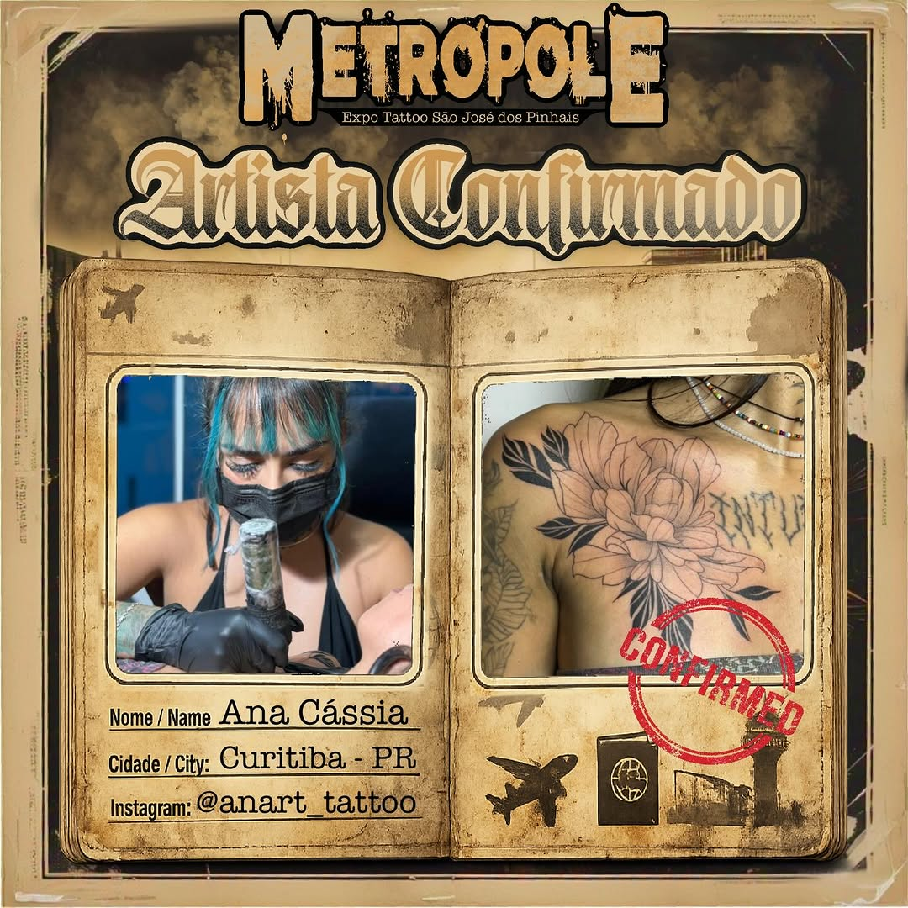
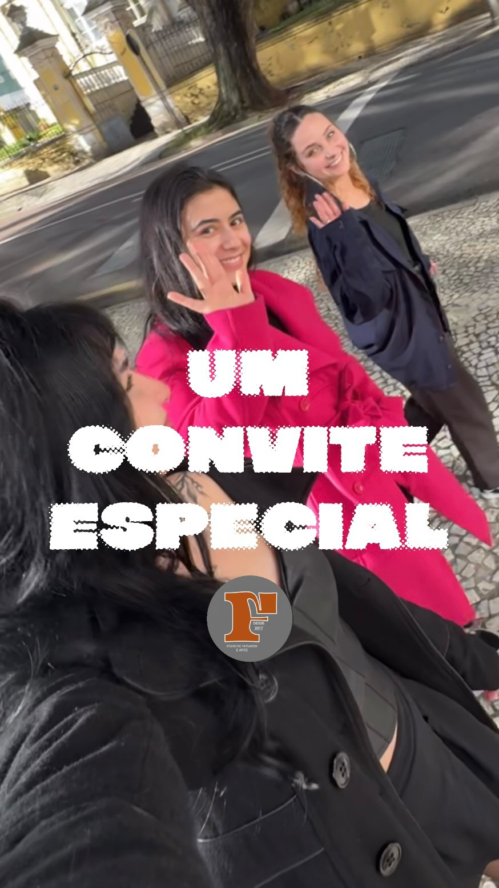
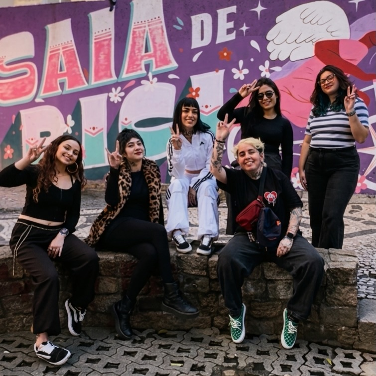

Estúdio — Curitiba — Artes exclusivas
Cada traço conta uma história
Estúdio de tatuagem Fine Line em Curitiba. Artes exclusivas e autorais por agendamento.
Estúdio — Curitiba — Artes exclusivas
Estúdio de tatuagem Fine Line em Curitiba. Artes exclusivas e autorais por agendamento.
Anart Tattoo é um estúdio de tatuagem Fine Line em Curitiba, onde cada peça é criada de forma autoral e exclusiva. Ana Cássia desenvolve artes personalizadas que carregam o significado único de cada cliente, trabalhando por agendamento para garantir atenção total em cada projeto.
Cada trabalho do estúdio é pensado para ser único — não replicamos desenhos prontos. A partir da sua ideia e história, Ana cria uma arte autoral que se torna uma obra definitiva na sua pele, executada com a delicadeza técnica do Fine Line.

Traços finos e delicados que transformam histórias em arte permanente. Cada peça é única e criada especialmente para você.
Flores, folhas e elementos naturais com precisão milimétrica. A delicadeza da natureza preservada na pele.
Geometria minimalista com linhas precisas. Símbolos e formas que carregam significado pessoal.




Entre em contato via DM no Instagram ou WhatsApp com a sua ideia. A consulta inicial é gratuita e você recebe o desenho autoral em até 48 horas.
Agendar consulta